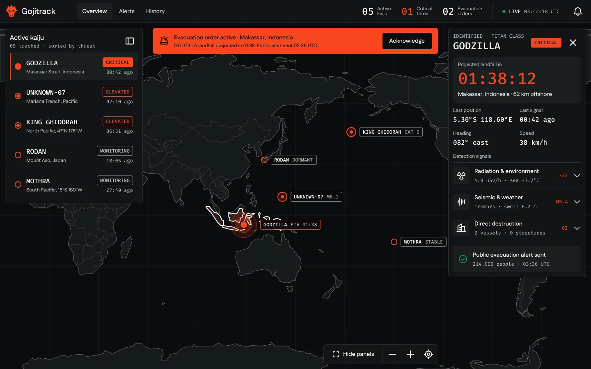
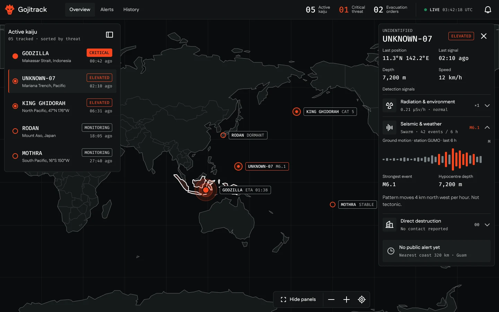
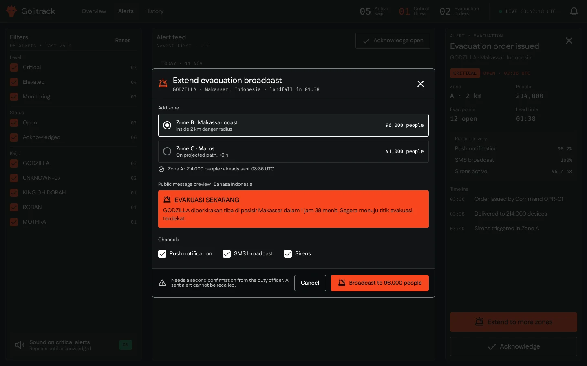
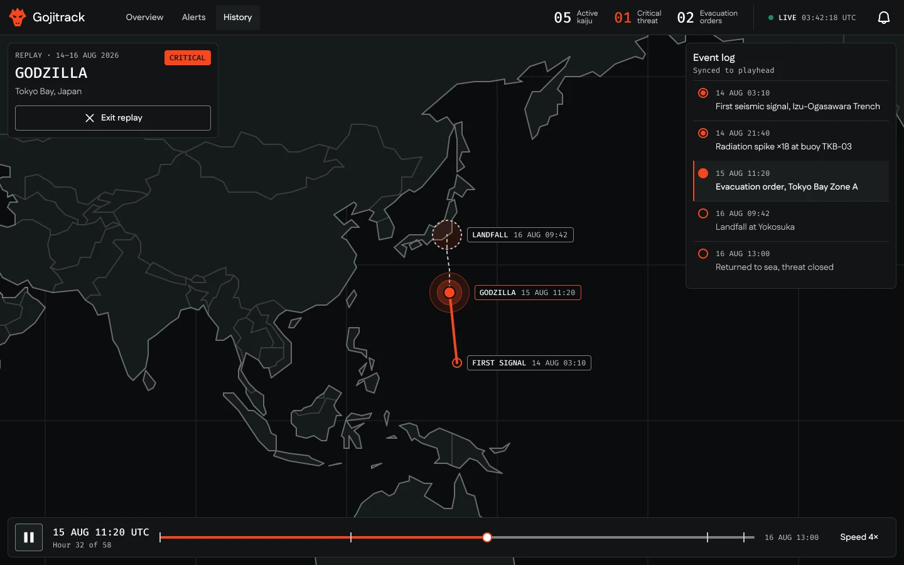
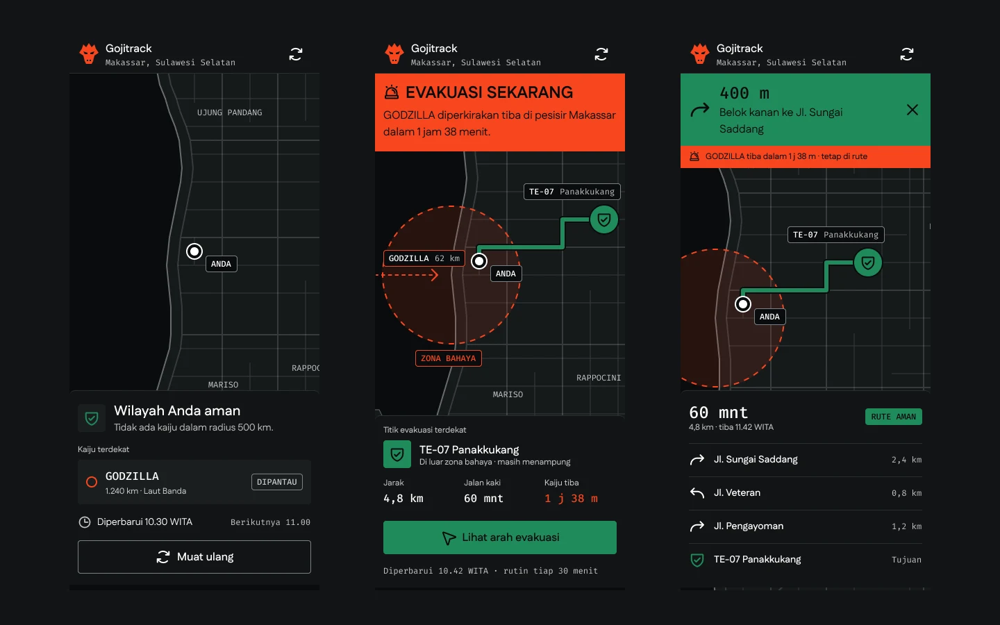

Kaiju Monitoring Platform That Shows Less So Responders and Residents Act Sooner

Context
GOJITRACK is a personal exploration. It is a fictional platform that tracks kaiju activity around the world for an international response team, and warns residents when they need to evacuate.
Problem
Two very different people read the same event. A response team needs enough detail to act early, while a resident under threat needs one clear instruction and a route, right away. Showing everything to everyone would bury the one thing each of them actually needs.
Process
I split the product into two surfaces. The ops dashboard keeps the map in the middle with floating panels that can be hidden, ranks threats by marker shape as well as colour, and only opens detection signals on demand. The public app is mobile first and passive. It refreshes status every 30 minutes, but an evacuation alert takes over the screen immediately with the nearest evacuation point and turn by turn directions.
Everything sits on a 4 px grid using even values only, set in Fustat and Fira Mono, with Phosphor icons rebuilt at a 2 px stroke. Every colour pair was checked against WCAG AA, which is why text on orange and green is near black instead of white.
Outcome
Show Less, Act Sooner
A responder can go from an alert to the signal behind it in two clicks, and a resident knows what to do from a single screen. Extending an evacuation to a new zone asks for a second confirmation, because a public alert cannot be recalled. Both surfaces are live as working demos with fictional data.



